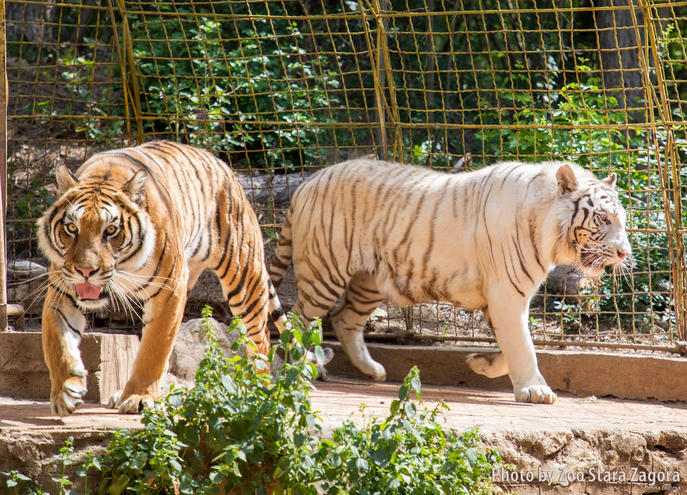
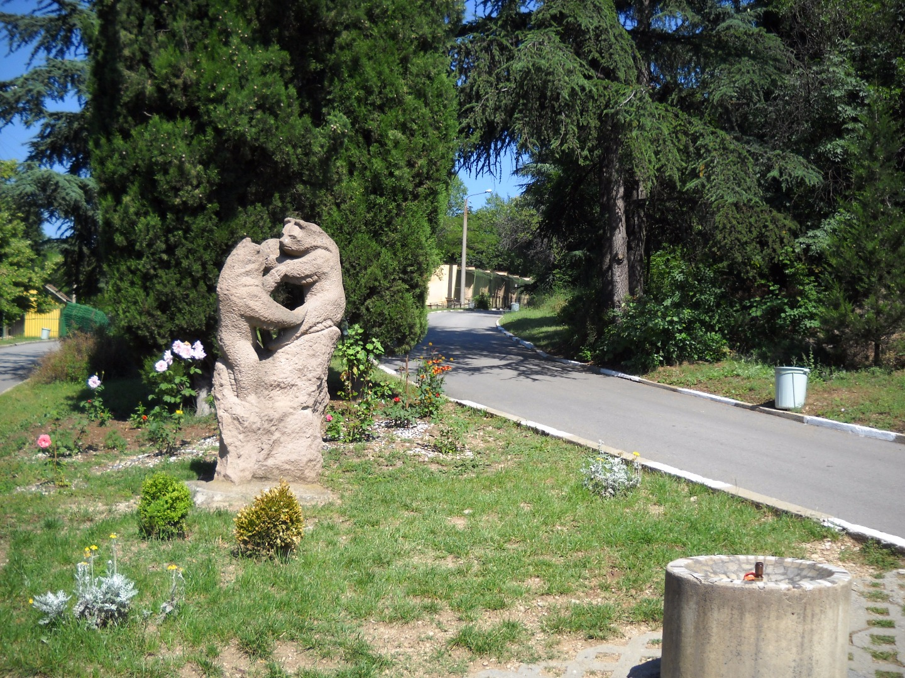

The city of straight streets, linden trees and poets
Stara Zagora is Bulgaria's fifth-largest city and the administrative headquarters of the Stara Zagora Province, which is located in the ancient area of Thrace. Stara Zagora is a beautiful green city with a warm winter, gorgeous spring and autumn, and a scorching summer. You will like walking in the city center whenever you visit the city. Rather than visiting museums, most people choose to spend their time in Stara Zagora roaming around the picturesque city. This is entirely logical, given Stara Zagora's abundance of pleasant walking opportunities.
The Art Gallery
The Gallery now has about 4000 works of art in its collection. They're split into six categories: painting, printing, sculpture, iconography, revival engravings, and applied arts. The visitors will be able to see outstanding masterpieces by artists from Bulgarian art from the last two centuries.
Stara Zagora's zoo
| The zoo is the country's second largest, immediately after the Sofia Zoo. It now houses approximately 400 animals from 70 different species from all over the world. The only white Bengal tigers in the country are one of the key attractions. Brown bears, lions, jaguars, wolves, lynxes, and badgers are all predators. Deer, llamas, roe deer, mouflons, and reindeer can also be seen. Bird enclosures and aviaries, which house ostriches, emus, parrots, and waterfowl such as flamingos, ducks, and swans, are worth noting. The zoo does not have an aquarium, but it does have a terrarium with turtles, iguanas, and boa snakes. |  |
| The garden's history stretches back to 1957. Ivanka and Dimitrinka, two bears, were the first to live there. A wooden sculpture of them stands at the zoo's entrance. |  |